我们用 AI Agent 驱动前后端全流程开发——从需求分析到自动化测试，整个 harness 工作流由 1 个 TL + 6 个子 Agent 组成。跑起来之后第一个问题就是：钱烧得很快，但完全不知道烧在哪。我们先用 AgentLens 把成本拆开看，发现系统提示词、工具返回信息、历史消息是大头。围绕"让 AI 只看到当前需要的上下文、减少无关的上下文、减少重复的上下文"这三个原则，我们逐一改造了架构拆分、稳定前缀、渐进式披露、代码图谱、CLI 替代 MCP、长期记忆按需索引、工具调用并行化等 10 个方向。整体全流程预估降本 50%~65%。
01
1.1 业务背景
过去半年，我们团队一直在探索用 AI Agent 驱动前后端协同开发——从需求分析、技术方案设计，到前后端并行编码、自动化测试、视觉还原验证，全流程由一个叫 tech-leader 的 harness Skill 统一调度：
TL（调度层）├── Wave 1（并行）：后端 Agent + 前端 Agent├── Wave 2：质量审查 Agent├── Wave 3：测试 Agent（用例生成 + 执行）├── Wave 4：视觉验证 Agent└── Wave 5：Agent 评测
跑一次完整的中等需求，往往需要经历 5-6 个 Wave、20+ 次子 Agent 调用、数百轮工具调用。规模一上来，token 成本就成了绕不开的问题。
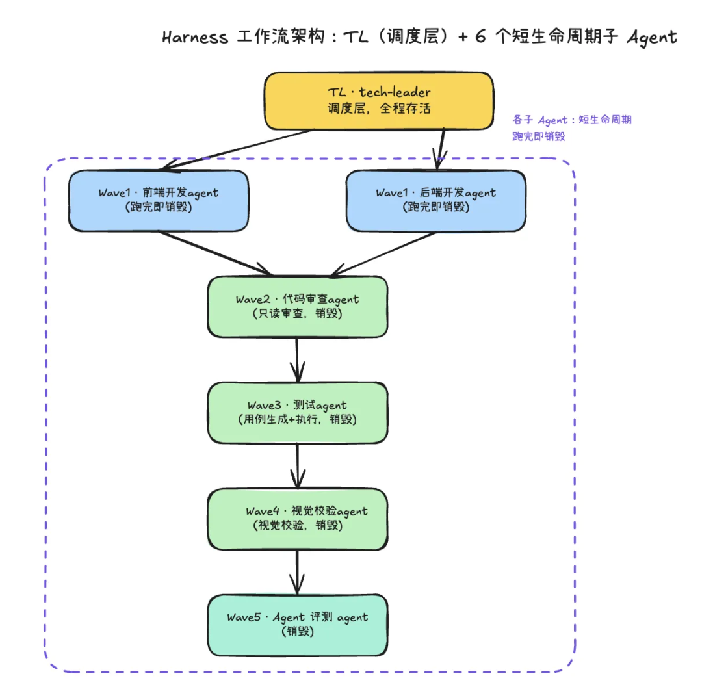
1.2 痛点分析：六类消耗来源
一次任务的 token 消耗可以归为六类来源：
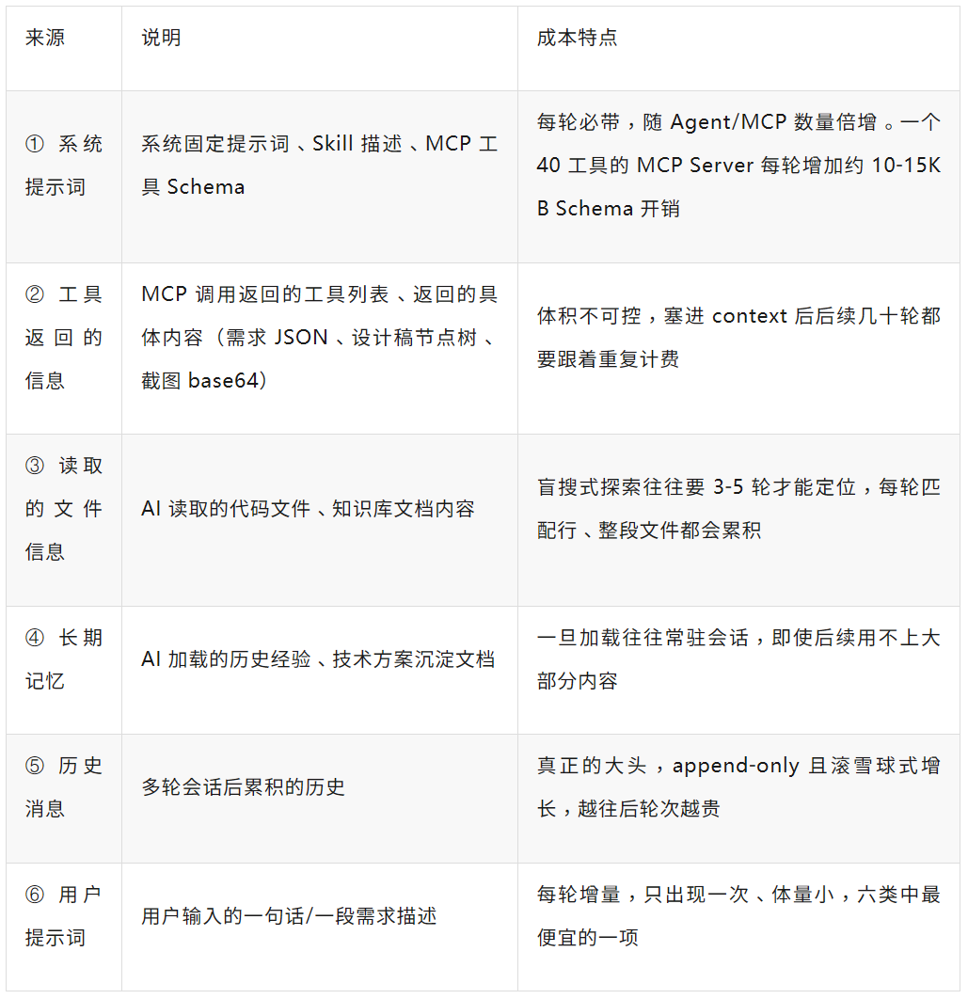
这六类来源叠加，导致一个中等需求的 token 消耗远超预期。而且在没有按 Wave 粒度拆分消耗之前，完全不知道钱主要烧在哪里——这是我们做这次优化专项的直接动因。
1.3 先建度量：看清成本在哪里
本人使用的 IDE 是 CodeBuddy 内网版，内网版是把每轮对话的工具链调用和 token 用量上报到内网的 AgentLens 平台，如果您使用的是其他 IDE，需要查阅下官方文档看看每轮对话的 token 用量怎么获取
没有度量就没有优化。CodeBuddy 已将每轮对话的 token 消耗上报至 AgentLens，通过 agentlens-mcp 可以按 TraceId 追踪单次调用链路，也可以按 SessionId 聚合一个完整需求的消耗分布：
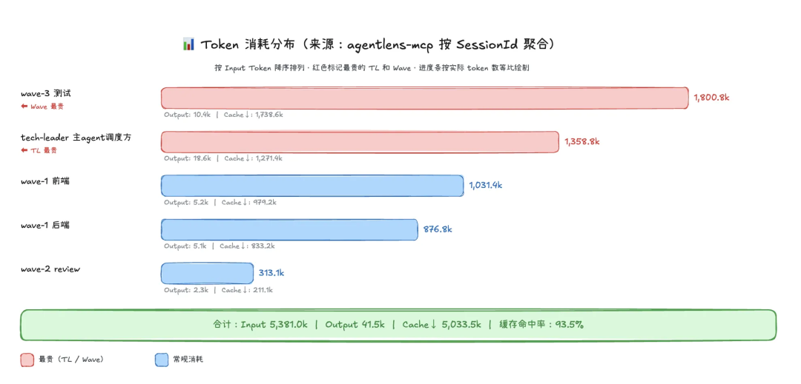
看清成本分布之后，目标就明确了：系统性压缩六类来源里能压缩的部分，把中型需求的全流程 token 成本降下来。
02
2.1 思路与路径
我们把可以下手的动作归纳为三个原则：
① 让 AI 只看到当前需要的上下文 —— 该加载的东西，按需加载，不要一次性全带② 减少无关的上下文 —— 不该看到的东西，一开始就别带进来③ 减少重复的上下文 —— 同一份内容，不要在多轮里反复计费
动手之前还有一个更前置的架构判断：是否需要拆多 Agent。拆分本身有成本（多份系统提示词并行计费），只有需求规模足够大，拆分撬动的后续收益才能覆盖这笔开销。所以我们先做规模预判（S/M/L 模式）：小需求走单 Agent 直接处理；只有中大型需求，才进入多 Agent 并行调度。
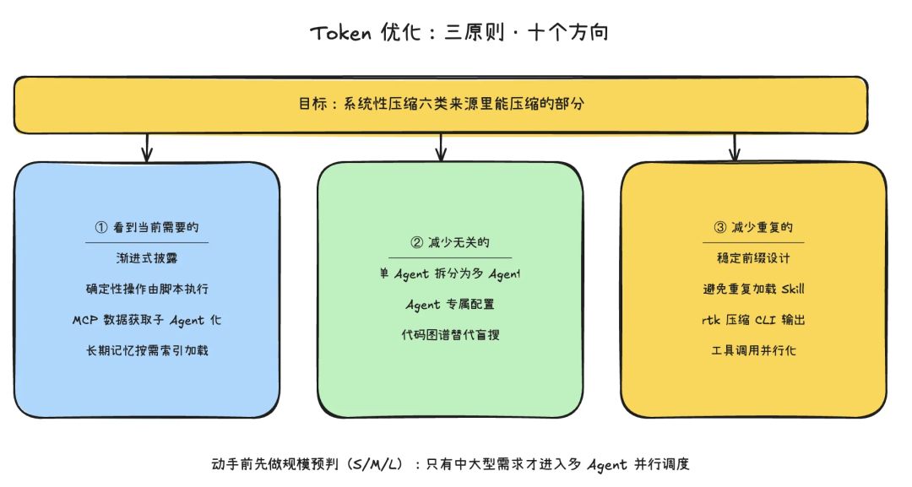
2.2 关键技术选型
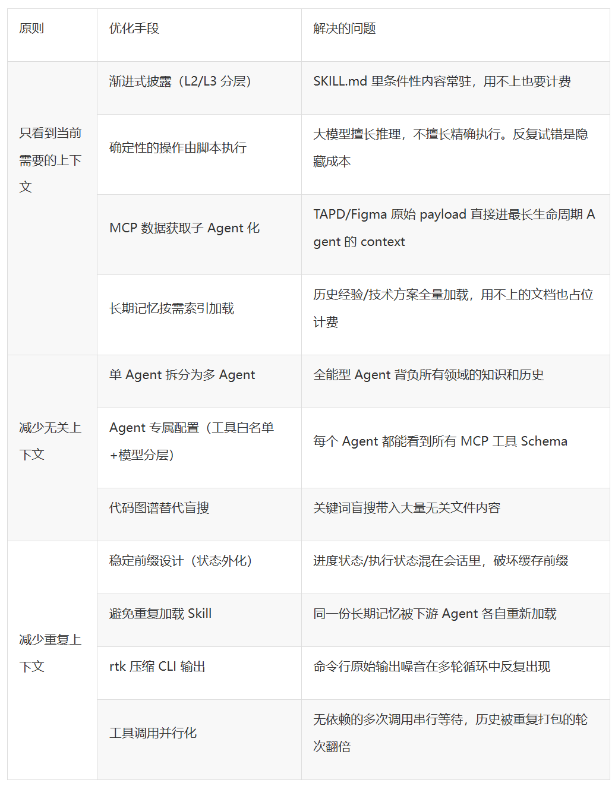
03
3.1 让 AI 只看到当前需要的上下文
3.1.1 渐进式披露
Anthropic 在 Agent Skill 规范中提出了一个"渐进式披露"架构，核心思想是：不是所有内容都需要常驻 context，只有真正需要时才加载。
三层结构：
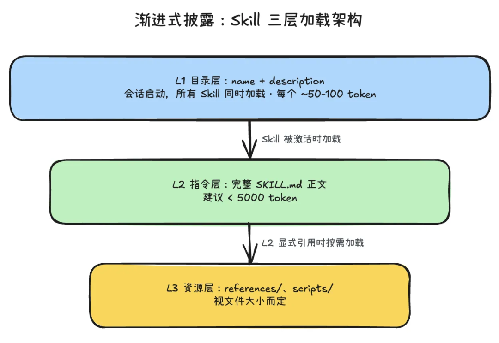
这种机制的好处是，即使安装了 20 个 Skill，初始加载也仅 1000-2000 token。相比单体式提示词，上下文使用量减少约 90%。
本次优化主要是把正文部分内容迁移到资源层。
条件性内容外移到资源层
我们之前的问题是：大量只在特定场景才需要的内容，混在 SKILL.md 正文里常驻 context。
以 自动化测试Skill 为例，改造前有几块内容其实是条件性的：
① spec 模板代码（约 40 行 TypeScript）
这段代码只在 Phase A 生成 spec 文件时用到一次，之后完全是冗余占位。所以我们把模版代码外置到references中，按需提取。
② DB 前置操作规则（约 38 行）
只有检测到 DB 依赖用例时才需要。一样把DB操作规则外置到references中，按需读取。
改造后自动化测试Skill正文从 198 行降到 128 行（-35%）。
步骤详情外移到资源层
比条件性内容更彻底的做法，是把"所有步骤的详细内容"都从 SKILL 正文移到资源层，正文只留骨架。
以 `tech-leader`Skill （主调度Skill）为例：
优化前，S/M 两种模式（小需求/中等需求）的完整工作流、Wave 1~5 各阶段的派发 prompt、审查规则、测试调度逻辑等执行细节全写在 SKILL.md 正文里，Skill 一旦激活就全量常驻 context。
但 TL 每次实际只走一条路径——判完规模后要么进 S 模式、要么进 M 模式，进 M 模式后又按阶段逐步推进，任一时刻真正用到的只是其中一小段，其余步骤的详细内容全程占位计费却用不上。
改法是把各步骤的详细执行内容拆到 `references/` 资源层，SKILL.md 只保留**骨架**——核心职责、规模预判维度表、分流规则、进度追踪机制、容错机制。
骨架负责"决定下一步走哪"，具体"怎么走"则按需 `read_file` 对应的资源文件。
3.1.2 确定性的操作由脚本执行
这里有两处优化：
CLI 驱动一切环境操作和校验操作
一开始我的工作流里面，没有任何操作脚本和验证脚本。后来发现后端Agent写代码时，频繁出现拼错数据库连接参数、找错启动服务命令、绕过编译等等；因为反复查找各种参数、命令，为此消耗了大量token。
后来写了一个脚本，里面包含数据库迁移、编译、服务启动、健康检查等确定性的命令，全部让AI通过 dev-env.sh 脚本执行。AI 不拼接 mysql -u root -p 这种命令，只提供参数给脚本。
能用CLI就不用MCP
MCP 工具调用的隐藏成本：
MCP 工具给了 Agent 强大的能力，但每次 MCP 工具调用，实际上是一次完整的 LLM 推理轮次：
每次 MCP 工具调用的真实成本：LLM 决策：判断调用哪个工具、构造参数 ← 一次 API 请求工具 JSON Schema 常驻 context ← 每轮 10-15KB 额外 input工具返回结果进入 context ← 可能几千行LLM 处理结果：分析输出、决定下一步 ← 又一次 API 请求
自动化测试Skill中，我们最初用的是 Playwright MCP——通过 MCP 协议让 Agent 实时控制浏览器（打开页面、点击、截图）。但实践中发现几个问题：
每个操作都要消耗一次 AI 推理：点击一个按钮就是一次 MCP 调用 + 一次模型推理，10 步操作就是 10 轮对话，token 消耗大、速度慢
不可重跑：MCP 模式下操作是实时的"一次性"行为，测试失败后想重跑一遍，Agent 需要重新推理一遍所有步骤
无法并行：MCP 控制的是单个浏览器实例，多个用例只能串行执行
后面把Playwright MCP换成了Playwright CLI，CLI的核心思路是把自然语言用例翻译为 Playwright spec 文件，再调 Playwright CLI 批量执行。大模型做推理（生成 spec），脚本做执行（跑 CLI）。把"理解用例并翻译为代码"和"实际跑测试"拆成两步，前者需要 AI，后者完全不需要。
这次改造不仅节省了token，耗时也大大缩短。
3.1.3 MCP 数据获取子 Agent 化
问题：主agent自己调 MCP，原始数据永久卡在最长生命周期的 context 里
tech-leader 工作流里，需求分析阶段要读 TAPD 需求、要读 Figma 设计稿，这两步 MCP 调用最早是主Agent自己直接发起的：
● TAPD -> 返回mcp所有工具描述、返回完整需求描述、关联缺陷、任务列表● Figma -> 返回mcp所有工具描述、返回设计稿完整节点树 JSON + 截图
问题在于 TL 是整个工作流生命周期最长的 Agent。这两次 MCP 调用如果发生在 TL 自己的会话里，原始 payload——动辄几千字的需求描述、上万行的设计稿节点树 JSON——会一直留在 TL 的 context 里，后续几十轮工具调用都要重新计费一遍。
改法：给 TAPD/Figma 各建一个专属子 Agent，只返回结构化摘要
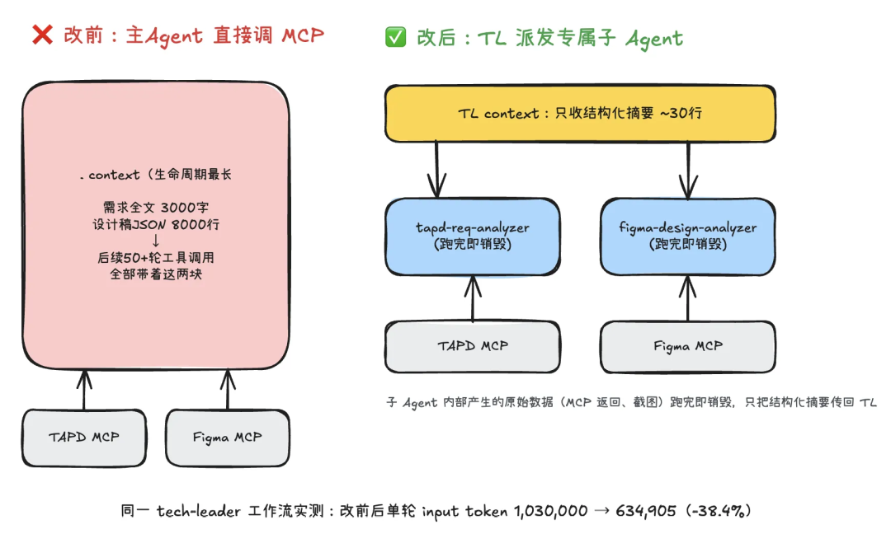
实测同一工作流改造前后，单轮会话 input token 从 1,030,000 降到 634,905，-38.4%。首次调用两种方式消耗基本一样，真正的收益在后续多轮会话不会带着原始 payload 越滚越大。
3.1.4 长期记忆按需索引加载
context-keeper（知识沉淀Skill）负责在方案设计前加载历史经验/技术方案沉淀文档，最早的做法是把匹配到的候选文档全量读入，即使一份文档里只有一两条经验跟当前任务相关，剩下几十行也会一起进 context 常驻到会话结束。
改法是引入一层轻量的 INDEX.md 目录索引，把"查目录"和"读正文"拆成两步：
❌ 改前：直接扫描 team/project 下所有历史文档，命中关键词就整篇 read_file✅ 改后：1. 先 read_file INDEX.md（几十行的标题+标签+摘要表格）2. 按关键词匹配标题/标签/摘要，结合类别权重计算相关度3. 取 Top 3 命中条目，才对这几篇 read_file 正文4. INDEX 不存在时才回退到全文 search_content（兜底，非常态路径）
INDEX.md 本身是所有历史文档的目录，体量通常只有几十到一两百行——用几十行的索引筛选出真正相关的 2-3 篇，比一次性全量加载几十篇文档的正文便宜得多。相关度评分低于阈值的文档从一开始就不会进入 read_file 候选列表，从源头减少了"加载了但用不上"的常驻 token。
3.2 减少无关的上下文
3.2.1 单 Agent 拆分为多 Agent
最早的 tech-leader 是一个从头到尾自己干完所有事的单体 Agent，带来两个问题——前端/后端/测试/视觉规范混在同一段历史里，越跑越臃肿；全程一条会话没有重置时机，历史只会越滚越大。
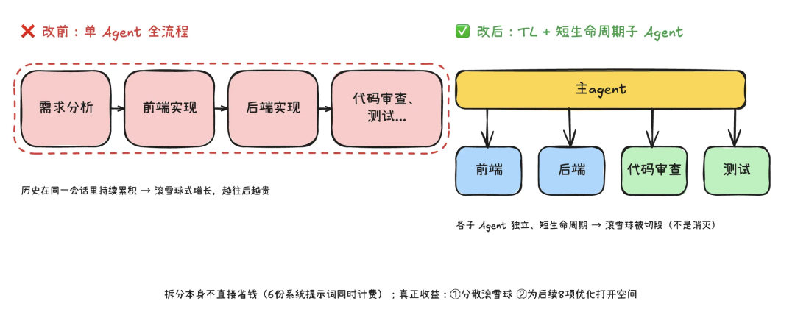
改法是引入专职调度的 TL，把编码/测试/视觉校验分发给按角色划分的子 Agent（backend-dev / frontend-dev / test-runner / visual-reviewer / code-reviewer），每个子 Agent 只携带自己领域的提示词和工具，跑完即销毁，Wave 1 的前后端还能并行派发。
需要注意的是：拆分本身不是靠"减少历史堆叠"直接省钱的——6 个 Agent 并行跑，等于同时有 6 份系统提示词在计费。真正的收益是分散滚雪球效应（短生命周期子 Agent 跑完销毁，滚雪球被切段）和为后续优化打开空间（稳定前缀、工具裁剪、模型分层、子 Agent 化都建立在"已经拆分"的前提上）。这也是为什么要先做规模预判——小需求不做无谓拆分。
3.2.2 Agent 专属配置
以前每个子 Agent 默认带上所有已注册 MCP Server 的工具 Schema（即使用不到），是一个隐藏的成本漏洞。
以前我们用的是CodeBuddy自带的TeamCreate工具，自动派生子 Agent来完成任务。但是这种模式就没办法给子 Agent设置mcp白名单、模型。后来我的改法是：给每个角色创建单独的自定义Agent，在创建团队时调用相应的自定义子 Agent执行任务。
这种做法可以在 Agent 定义文件的 frontmatter 中通过 tools 字段指定工具白名单，未列出的工具对该 Agent 完全不可见，比如后端开发Agent，就不需要任何mcp工具，只需要读文件、写文件等工具；
---name: backend-devtools: list_dir, search_file, search_content, read_file, replace_in_file, write_to_file, execute_command# 没有 mcpServers 字段 → Figma/TAPD/iWiki 等 MCP 全部不暴露---
顺带的收益是把原来 主Agent派发子 Agent提示词里的大段稳定指令迁移到子 Agent 系统提示词里（更容易命中缓存），TL 的 派发提示词 从 10-15 行精简到 2 行动态内容。
同时可以按角色做模型分层路由：自动化测试、视觉还原对比 这类规则性强、推理要求低但轮次最多（修复循环）的角色换成 GLM-5v（智谱 GLM-5V 多模态模型，成本约 Sonnet 的 36%），成本节省随修复轮次倍增，测试/视觉 Agent 成本 -64%。
3.2.3 代码图谱替代盲搜
Agent 在编码阶段做的第一件事，往往是"理解项目结构"。传统方式是 search_content 关键词搜索：
搜索 "UserService" → 返回 20 个文件的匹配行搜索 "getUserById" → 返回 8 个文件的匹配行read_file UserService.java → 300 行进 contextread_file UserController.java → 200 行进 context...
每一次搜索返回的结果都会进入 context，大量无关匹配行随之带入。更糟的是，agent 往往需要多轮搜索才能逐渐定位——探索过程本身就是 token 消耗。
代码图谱：一次查询直接定位
后面我们的工作流中使用了 graphify 代码图谱，代码图谱使用AST和语义来给项目创建文件索引和依赖关系，在搜代码文件前先搜这个目录，锁定文件范围，再去read_file文件，能节省几十倍的token（官方预估数据）。
代码图谱的 token 节省不只体现在单次查询上，更重要的是减少了 Agent 的探索轮次。少一轮工具调用，就少一次 API 请求，就少一整个 context window 的 input token 计费。在修复循环场景下，这个收益会被轮次数放大。
实测数据对比：
我们在相同任务下分别测试了使用代码图谱和未使用代码图谱两种模式的 token 消耗：
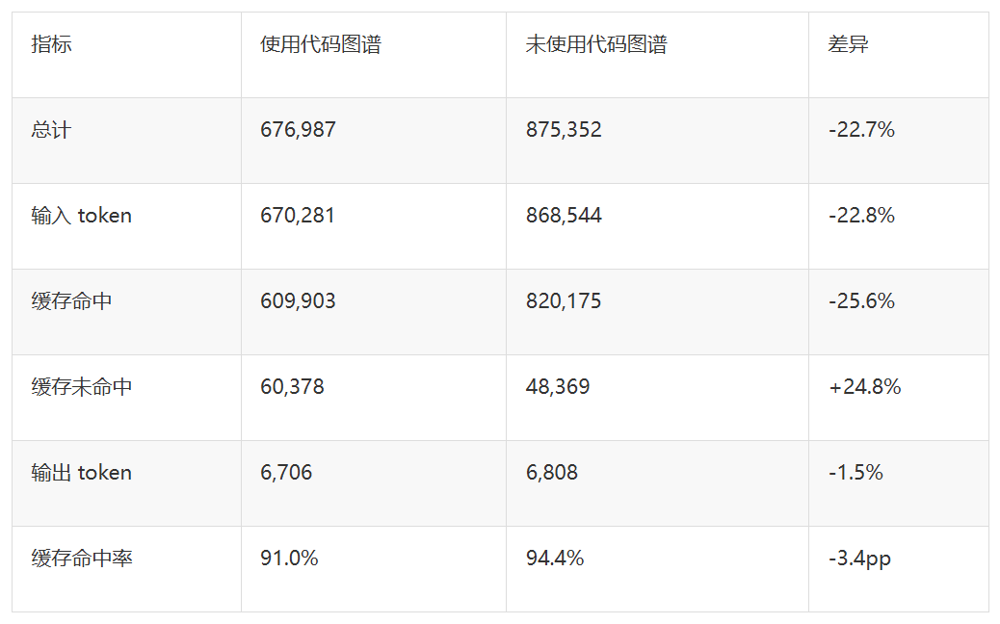
关键发现：
总 token 节省 22.7%——从 87.5 万降到 67.7 万，节省约 19.8 万 token
输入 token 是主要节省来源（-22.8%）——代码图谱减少了探索过程中带入 context 的冗余文件内容
代码图谱使用小tips：
1）首先需要安装graphify
uv tool install graphifyy2） 执行初始化
让graphify给你的代码仓库建立索引，大概需要几分钟的时间。初始化成功后，会生成一个graphify目录，这个目录下面你只要提交4个文件就可以了，其他可以不用提交。
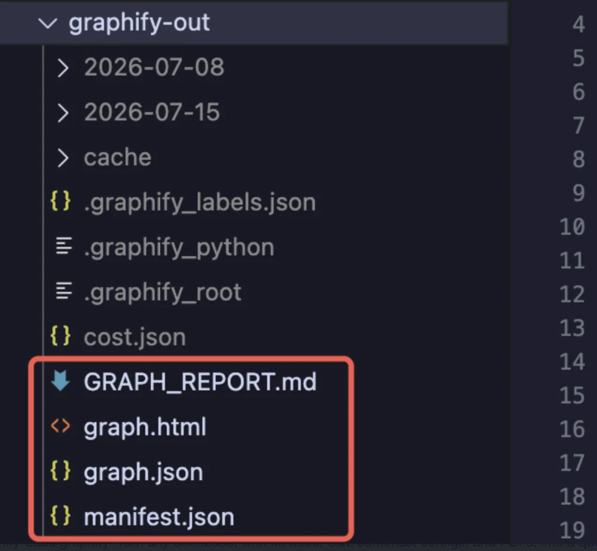
3）增量更新
细心的同学可能会问了，那如果我的代码更新了怎么办？
你可以绑定Git Hook，graphify hook install一键绑定 post-commit + post-checkout，commit 后自动增量更新图谱、checkout 后自动切换分支图谱。
省时间技巧：直接丢github链接给AI，让AI帮你完成安装，git hook绑定等等。（ https://github.com/Graphify-Labs/graphify ）
4）怎么用
直接告诉AI代码搜索请使用代码图谱graphify，就会自动触发
3.3 减少重复的上下文
3.3.1 稳定前缀设计
KV Cache：为什么前缀稳定等于省钱？
理解这个优化，需要先了解一点 Transformer 的底层机制。
LLM 处理每个 token 时，需要对它之前所有 token 做注意力计算（Attention），这个过程会产生两个中间矩阵：K（Key）和 V（Value），合称 KV Cache。KV 矩阵的计算量是 O(n²)——这是推理成本的主要来源。
Prompt Cache 的本质是：如果你本次请求的前缀和上次完全一致，服务商直接复用上次的 KV 矩阵，跳过重复计算，只收缓存读取的低价（约正常价格的 10%）。
我们发现 「派发子 Agent的提示词」里稳定指令和动态内容（技术方案文档）交错排列，导致前缀无法命中缓存，改法是把动态内容统一后置。
主Agent自身还有个隐藏的前缀破坏者：进度状态不断在会话里输出累积。原来每个阶段切换都要在对话里输出完整进度看板，堆积在历史里导致历史不能被压缩。改法是把进度状态外化到文件中：
主Agent每次被唤醒先 read_file 进度文件，而不是回放历史。阶段切换也改成单行输出（✅ Wave 1 完成 → Wave 2 🔄 已启动），额外收益是会话中断后可直接读文件恢复现场。
3.3.2 避免重复加载 Skill
排查 「前端Agent」 的 context 膨胀时发现，"调用 知识沉淀Skill 加载项目上下文"这一步其实没必要——主Agent 做方案设计时已经加载过历史经验并写入了技术方案文档。
前端Agent 直接读文档就能拿到结论，不需要重新触发 use_skill 把 200 行 SKILL.md 再次加载进 context。信息应该在最上游收集一次，通过文档传递给下游，而不是让每个 Agent 各自重复获取。
3.3.3 rtk 压缩 CLI 输出
git status、npm test、docker ps 这类命令的原始输出夹带大量噪音，在自动化测试的修复循环中反复出现。我们接入了 rtk——一个在命令执行前拦截、重写为压缩版本的开源 CLI 代理，官方实测降幅 60%-90%。
接入时踩了两个坑：
① 官方 --agent 不支持 CodeBuddy，改为用 CodeBuddy 的 PreToolUse Hook 机制自己实现等价拦截；
② rtk 输出字段是 updatedInput，CodeBuddy 要求的是 modifiedInput，字段名不一致会导致静默失效（不报错但不生效），需要写一个几行的转换脚本做字段名转换。
评估 rtk 效果时也踩了方法论的坑：最初想用"同一需求跑两遍完整工作流，rtk 开/关各一次"对比，但大模型的执行路径本身不确定（探索轮次、有没有踩坑重试都会波动），噪声比 rtk 本身的效果还大。
更可靠的方式是用 rtk gain 统计或直接命令行对比——因为 rtk 的压缩是纯文本过滤，跟大模型决策无关，100% 可复现：
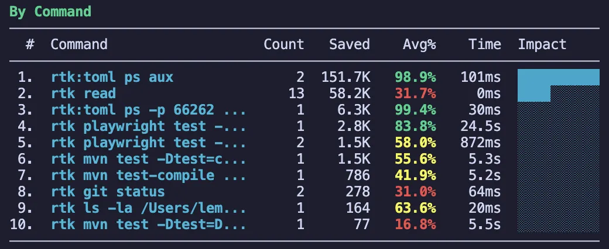
幅度因命令而异（ps aux -98.9%，纯 git status 仅 -31%），不能拿"60%-90%"当固定值。全局配置一次（~/.codebuddy/settings.json），所有子 Agent 自动获得压缩效果。
3.3.4 工具调用并行化
无依赖关系的多次工具调用如果串行执行，每一次调用都是一轮独立的 LLM 推理，前面所有轮次的历史都要跟着重新打包计费一遍——调用次数越多，滚雪球轮次越多。我们排查了两类典型的"本可并行却串行"场景：
❌ 改前：TAPD 摘要获取 → 等结果 → 再发起 Figma 摘要获取 → 等结果两次子 Agent 调用互不依赖，却占用了 2 轮历史累积✅ 改后：TAPD/Figma 若同时存在，同一轮消息内并行发起Task 工具同时传入两个 subagent_name 调用，一轮内拿到两份摘要
TAPD 需求摘要和 Figma 设计稿摘要本身没有先后依赖，我们把 tapd-req-analyzer、figma-design-analyzer 的派发方式从"依次调用、等结果"改成"同一轮消息内并行发起"，两个子 Agent 各自跑完即销毁，主Agent 一轮就拿到两份摘要，比串行少一轮历史打包。
测试用例执行也是同理：自动化测试阶段原来是一条 spec 执行完再执行下一条，改法是让 Playwright CLI 一次接收多个 spec 文件、内置多 worker 并行跑（详见"CLI 替代 MCP"一节的批量执行方式），LLM 侧只需 1 次调用 + 1 次读汇总结果，不随用例数线性增加推理轮次。
判断是否可并行的原则很简单：两次调用之间没有数据依赖（后一次不需要前一次的输出作为输入）就应该并行，这类"沉默的串行"往往藏在最初写 prompt 时"想清楚一步再写下一步"的顺序思维里，需要专门排查才能发现。
04
4.1 核心指标
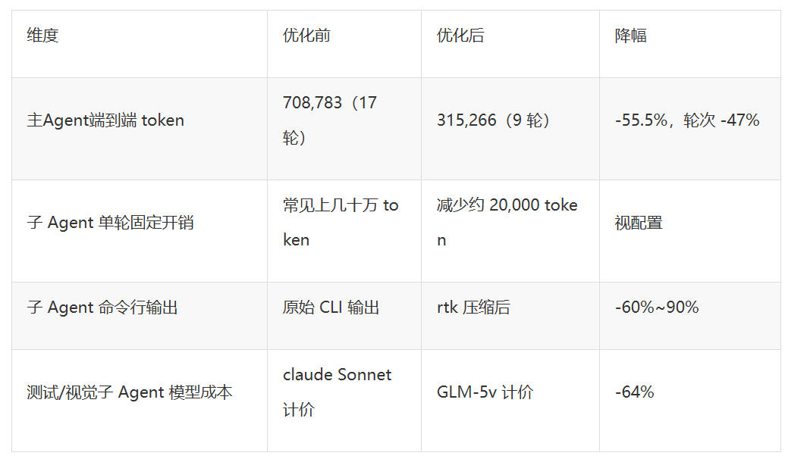
4.2 分项收益汇总
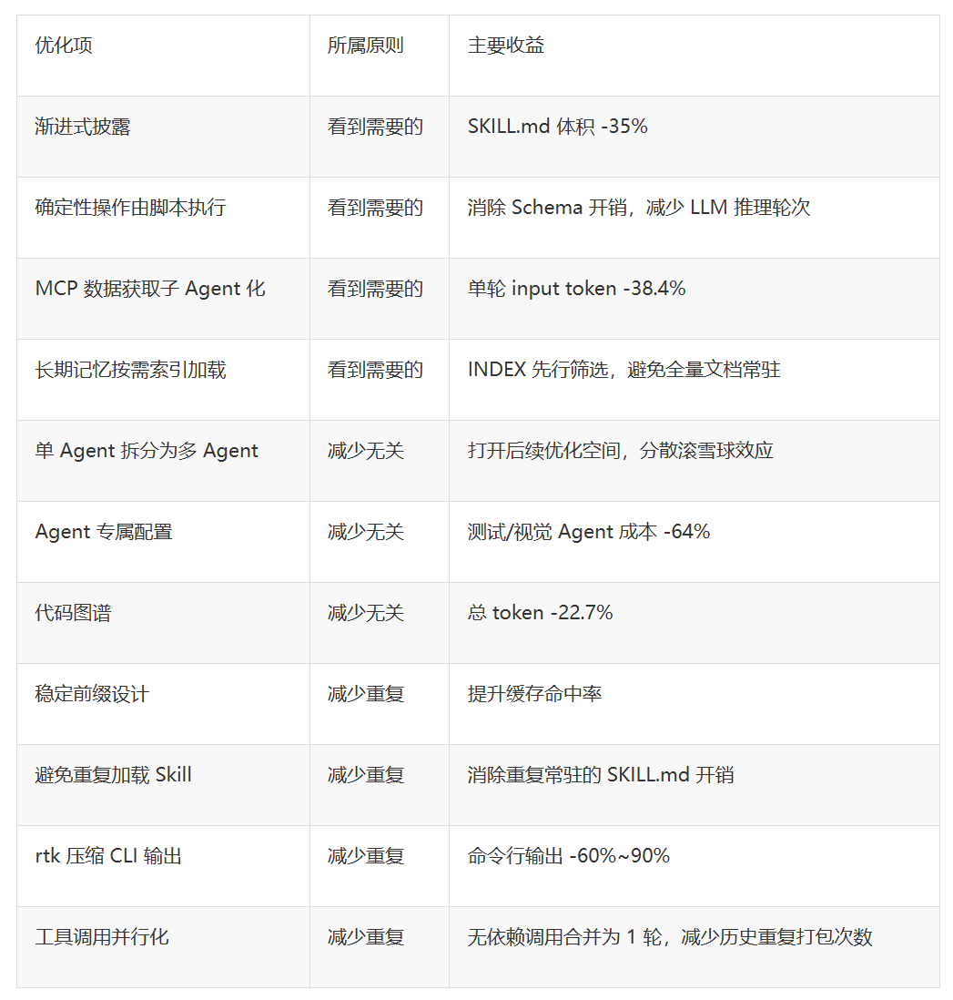
全流程反推：以实测的 Wave 消耗分布为基准，代入各分项已验证的降幅区间反推，一个中型需求跑完全流程，token 成本大致能降低 50%~65%。
05
回顾整个实践过程，我们沉淀了以下几点核心经验：
省 token 不等于功能降级——只是调整"何时加载"“怎么表达”，没删任何功能，反而让工作流更清晰。
上游收集一次，通过文档传递——最贵的冗余是"每个 Agent 各自重新发现同一份信息"。
最省钱的调用是不调用——确定性操作用 CLI/数据预取解决，把 LLM 留给真正需要语义理解的地方。
能并行就不要串行——没有数据依赖的多次调用，合并到同一轮消息内发起，能省下的是历史被重复打包的那几轮，而不只是等待时间。
落地优先级：先做规模预判和 Agent 拆分（架构前提）→ 度量 + SKILL.md 重排 + 全局接入 rtk（一个下午见效）→ 条件内容移出 SKILL.md、状态外化、排查无依赖调用改并行（逐步推进）→ 代码图谱、CLI 替代 MCP、工具裁剪、子 Agent 化、长期记忆索引化（中长期系统性梳理）。
目前这套"三原则、十方向"的优化方法已在 tech-leader 工作流全面落地，后续我们将补齐严格的端到端 A/B 复核，并把方法论沉淀为可复用的 checklist，应用到团队内其他 Multi-Agent 工作流的成本治理中。
如果你的团队也在做类似的 token 成本优化，欢迎在评论区交流讨论 💬
参考资料
https://www.anthropic.com/engineering/multi-agent-research-system
https://github.blog/ai-and-ml/github-copilot/improving-token-efficiency-in-github-agentic-workflows/
https://github.com/rtk-ai/rtk
-End-
原创作者｜叶珊珊


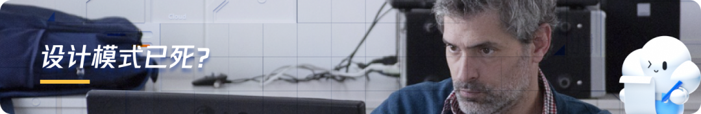